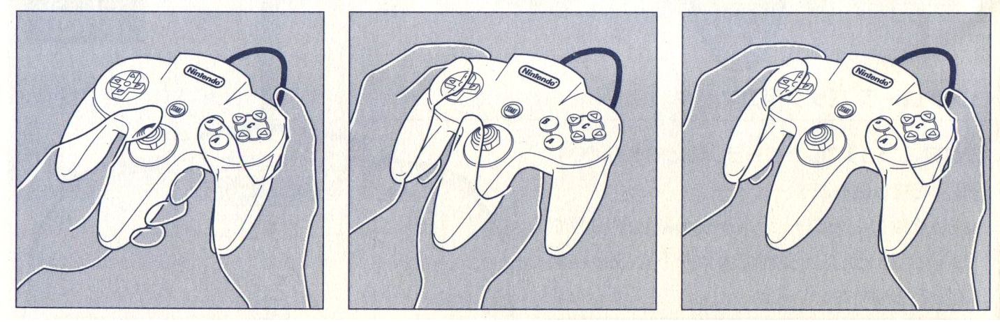

The Nintendo 64 (N64) is a time capsule for the video game consoles
of yesteryear. Consoles of the more modern variety such as the
PlayStation 3 or 4 and Xbox 360 or Xbox One, have been branded more
as entertainment systems.
The N64 was more of a plug in and play affair, simply offering
consumers the ability to play some unique, innovated, and fun
experiences, while offering some incredible power for its time.
Whether your goal is to relieve some nostalgic moments, play through
some games in their most authentic way, or introduce new or younger
audiences to the world of gaming, the N64 is the perfect choice.
Since the N64 has been discontinued, the N64 console you have
purchased may be missing some components that came included in a new
package.
- N64 Control Deck
- N64 Controller
- N64 Jumper Pack
- AC Power Supply
- Stereo Audio/Video Cable
- N64 Expansion Pak
- Mandatory to play certain games
- Aerial Extension Cable
- RF Modulator
- Aerial Switch Box
- Instruction Booklet
-
Consumer Information and Precautions Booklet
- Customer Support Ad Leaflet
To start the connection process for your N64, make sure you have the
following:
- N64 Control Deck
- N64 Controller
- AC Power Supply
- Stereo Audio/Video Cable
- A Working Television
- A Compatible N64 Game Pak
-
By compatible game cartridge we mean a cartridge that is of the
same region of the N64 you have. For example, if you have an N64
from the United States, make sure the N64 Game Pak is from the
United States as well. For more information, refer to the N64 FAQ.
-
Some N64 Game Paks cannot be played unless an N64 expansion pak is
inserted.
Due to the fact that most modern television nowadays only have HDMI
inputs, there may be an issue while trying to set up your N64. If
this is your situation, then you will also need:
-
A/V to HDMI Converter (Sold Separately)
- An HDMI cable (Sold Separately)
Make sure the Nintendo 64 Power Switch is off before beginning the
connection process.
-
Insert the AC power supply to the back of the N64 control deck
until you hear a click sound.
-
Connect the AC power cord into a standard wall outlet.
-
Insert the A/V cable to the back of the N64 control deck.
-
Connect the colored AV cables into the corresponding colored
audio/visual inputs on your television.
-
If you have an N64 Jumper Pak or N64 Expansion Pak, insert it into
the memory expansion slot below the Game Pak slot on the top of
the console.
-
If the N64 jumper or expansion paks have already been inserted,
proceed to the following step.
-
Insert an N64 Game Pak into the Game Pak slot until you hear a
click sound.
-
Connect an N64 controller into the first controller input of the
N64 control deck.
- Flip the power switch on.
-
Follow the on-screen instructions.
-
These may vary depending on the game you are currently playing.
Powering Off
- Flip the power switch off.
-
Remove the Game Pak from the control deck.
Make sure the Nintendo 64 Power Switch is off before beginning the
connection process.
-
Insert the AC power supply to the back of the N64 control deck
until you hear a click sound.
-
Connect the AC power cord into a standard wall outlet.
-
Insert the A/V cable to the back of the N64 control deck.
-
Connect the colored AV cables into the corresponding colored
audio/visual inputs of the AV to HDMI converter.
-
Insert the HDMI cable to the HDMI port on your AV to HDMI
converter.
-
Connect the HDMI cable to the HDMI port on your television.
-
If you have an N64 Jumper Pak or N64 Expansion Pak, insert it into
the memory expansion slot below the Game Pak slot on the top of
the console.
-
If the N64 jumper or expansion paks have already been inserted,
proceed to the following step.
-
Insert an N64 Game Pak into the Game Pak slot until you hear a
click sound.
-
Connect an N64 controller into the first controller input of the
N64 control deck.
- Flip the power switch on.
-
Follow the on-screen instructions.
-
These may vary depending on the game you are currently playing.
Powering Off
- Flip the power switch off.
-
Remove the Game Pak from the control deck.
The N64 controller looks and plays differently than most modern
controllers, below is a general description of the buttons on the
controller. Their use may vary depending on the game inserted into
the console at the time.
- A: Main button
- B: Secondary button
-
C Buttons: Camera and/or second option buttons
- L: Left shoulder button
- R: Right shoulder button
- Z: Trigger button
- D-pad: Control pad
- Start: Pause or menu button
- Analogue Stick: Control
Due to the design of the N64 controller, it can be held in 3
different ways. These may vary depending on play style and between
games.

Left Position
Right Position
Home Position